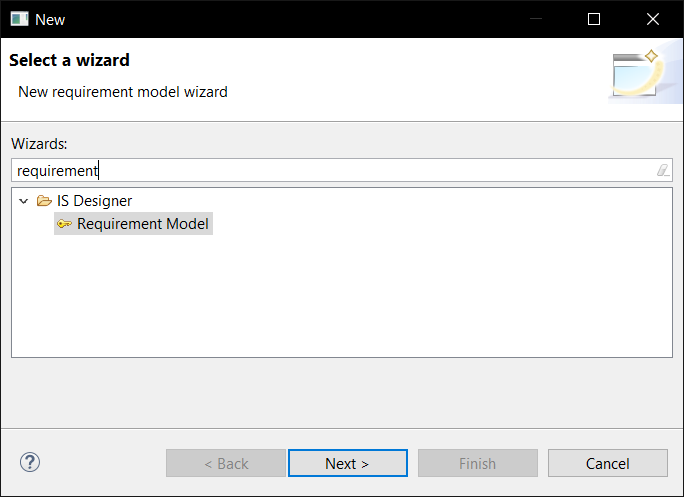
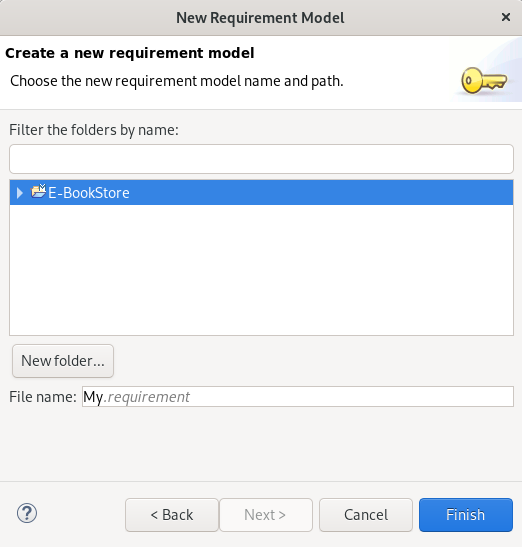
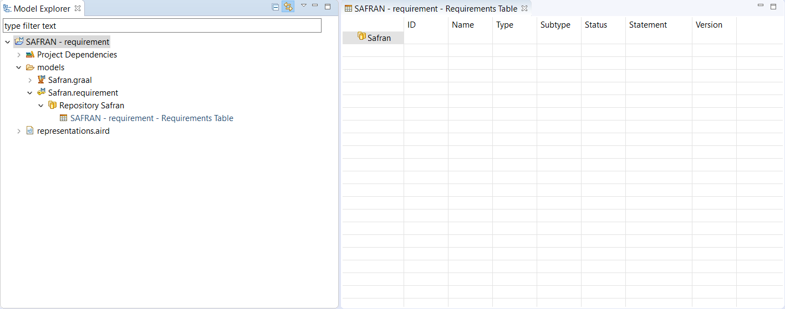
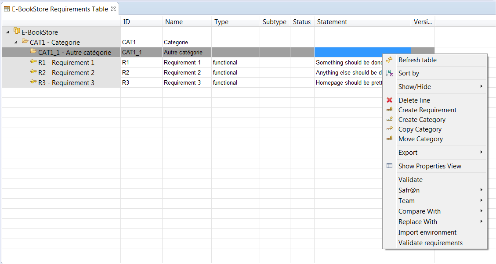
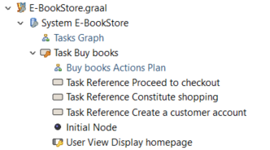
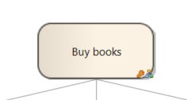
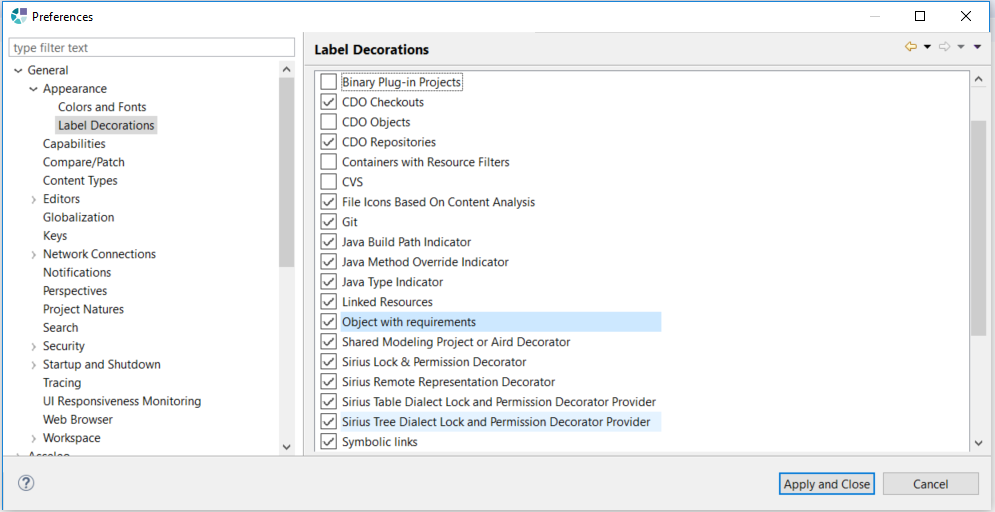

Copyright © 2008, 2023 Obeo - All rights reserved. This program and the accompanying materials are made available under the terms of the Eclipse Public License v1.0
L' outillage de gestion des exigences du Network Obeo apporte un ensemble d’outils permettant d’intégrer la gestion d’exigences d’un projet dans le processus de modélisation. Il est composé d’un éditeur permettant de saisir ses exigences et d’une vue gérant le lien entre les modèles et les exigences du projet.
Un assistant permet de créer un modèle d’exigences. Il est accessible via le menu :
File > New > Other ... > Requirement Model (Catégorie IS Designer)

Cet assistant permet de définir

Une fois l’assistant validé, le modèle est créé, la représentation Requirements table est créée et ouverte afin de commencer l'édition.

Lorsqu’un modèle requirement est créé à l’aide de ce wizard, le point de vue Requirement est activé. Dans le cas ou un modèle graal existe déjà dans le projet le point de vue Requirement (Graal Consolidated view) est activé. Le point de vue Requirement est décrit dans la section Point de vue Requirement. Le point de vue Requirement (Graal Consolidated view) est décrit dans la section de documentation Safr@n – Graal Methodology (Safr@n consolidated view).
Trois concepts peuvent être manipulés dans un modèle d’exigences : le Repository, les Categories et les Requirements.
Le Repository est l'élément racine du modèle. Il porte un nom, contient les catégories principales et peut référencer un élément de modèles.
Une Category est un conteneur d’exigences. Elle sert à ordonner les exigences selon différents critères. Un catégorie porte un identifiant et un nom et peut contenir des sous-catégories et des exigences. Elle peut référencer un objet de modèle.
Finalement un
Requirement modélise une exigence. Elle est typée selon les critères
Functional ou
Technical et peut porter un sous-type. Une exigence a un identifiant, un nom, un status et une description (
Statement ).
Il est possible de définir sa provenance (
Rationale), ses critères d’acceptation (
AcceptanceCriteria) et de référencer un objet de modèle.
A noter qu’un
Requirement a aussi un numéro de version. Ce numéro de version est initialisé à 1 et peut simplement être incrémenté de 1 en 1 en utilisant le bouton «+1» affiché sur la vue
Properties pour l’exigence.
L’outillage de gestion d’exigences embarque un point vue permettant :
La création nécessite dans un premier temps l’activation du point de vue Requirements. Pour cela, sur une session Viewpoint ouverte, lancer le menu
Viewpoint Selection
Choisir le point de vue Requirement.
Une fois le point de vue activé, il est possible de créer un tableau Requirements table sur un Repository d’exigences ou sur n’importe quelle Category. Il est ainsi possible de visualiser plus ou moins d’exigences selon le contexte choisi.
La création de ce tableau se fait via le menu :
New > new Requirements Table
Ce tableau permet de créer, modifier et supprimer des catégories et des exigences.
Les informations sont affichées en colonnes dont le contenu peut être édité directement.
L’objet sélectionné peut aussi être modifié via la vue
Properties.

Le menu contextuel propose les actions suivantes :
Le point de vue permet de créer une matrice de traçabilité d’exigence sur un Repository d’exigences. La création de cette matrice se fait via le menu :
New > new Requirements Traceability Matrix

Une matrice de traçabilité présente les éléments d’exigences du modèle en ligne et les éléments référencés en colonnes. Une croix est présente si l’exigence de la ligne référence l’objet de la colonne.

Il est possible d'éditer les cellules. Si une cellule est vidée, la référence entre l’exigence et l’objet est supprimée.
La vue Linked Requirements permet de lier les exigences aux éléments des modèles édités dans Obeo Designer. L’ouverture de la vue se fait via le menu :
Window > Show View > Other ... > Linked Requirement (Catégorie Obeo Designer For IS)

Cette vue est synchronisée avec l'éditeur actif dans Obeo Designer. Quand un élément de modèle est sélectionné, la vue se met à jour et présente tous les exigences qui ont été liées à cet élément.
Cette vue porte cinq actions permettant de manipuler rapidement les exigences sans avoir à passer par l'éditeur décrit dans la partie précédente.

La première action permet de créer et directement lier une nouvelle exigence à la sélection courante.

Au lancement de l’action, un assistant s’ouvre permettant de créer une nouvelle exigence. Toutes les propriétés de l’exigence peuvent être renseignée sur la première page. La seconde page permet de choisir la catégorie dans laquelle l’exigence va être positionnée. Dans le cas où celle-ci n’existe pas, il est possible d’utiliser le bouton New Category... pour en créer une nouvelle.
 -
-

Une fois l’assistant validé, l’exigence est créée à l’endroit spécifié et est liée à l’objet actuellement sélectionnée. La vue Linked Requirements est mise à jour.
La seconde action de la vue permet d'éditer une exigence présente dans la vue.

Elle s’active en sélectionnant une exigence dans la liste des exigences liées et son lancement ouvre l’assistant d'édition de façon à pouvoir modifier les propriétés de cet objet.
La troisième action permet de gérer l’association entre les éléments de modèle et les exigences.

Le lancement de l’action ouvre une boîte de dialogue pour le choix des exigences à associer à l'élément actuellement sélectionné.

La quatrième action permet de supprimer l’association entre une ou plusieurs exigences et l'élément actuellement sélectionné.

Cette action s’active lorsqu’une ou plusieurs exigences sont sélectionnées parmi les exigences liées de la vue. En la lançant, tous les liens entre ces exigences et l'élément sélectionné.
Une boîte de confirmation s’ouvre au lancement de l’action de façon à garantir tout erreur de manipulation.
L’utilisation de cette action ne supprime pas l’exigence du modèle. Seul le lien entre l’exigence et l'élément est supprimé, il est tout à fait possible de créer un lien entre l’exigence et un autre élément
La cinquième action permet d’activer ou désactiver l’affichage des exigences liées aux éléments fils de l'élément sélectionné.

Avec l’option désactivée, seules les exigences directement rattachées sont affichées :

Quand cette option est activée, les exigences attachées à des éléments fils de l'éléments sélectionné sont affichées en plus de celles rattachées directement à l’objet sélectionné.
Ces exigences sont affichées en gris et en italique pour permettre de les différencier.
De plus, en survolant une ligne, une infobulle contenant le nom de l'élément concerné s’affiche.

Des décorateurs permettent de visualiser rapidement les éléments ayant au moins une exigence rattachée sans avoir à sélectionner l'élément et consulter le contenu de la vue Linked Requirements.
Ces décorateurs sont affichés dans la vue Model Explorer et sur les diagrammes.

Vue Model Explorer

Diagramme
Les décorateurs peuvent être de 3 couleurs différentes :
Les décorateurs peuvent être globalement activés ou désactivés via le menu Window > Preferences puis dans la rubrique General > Appearance > Label decorations il faut cocher ou décocher Object with requirements
